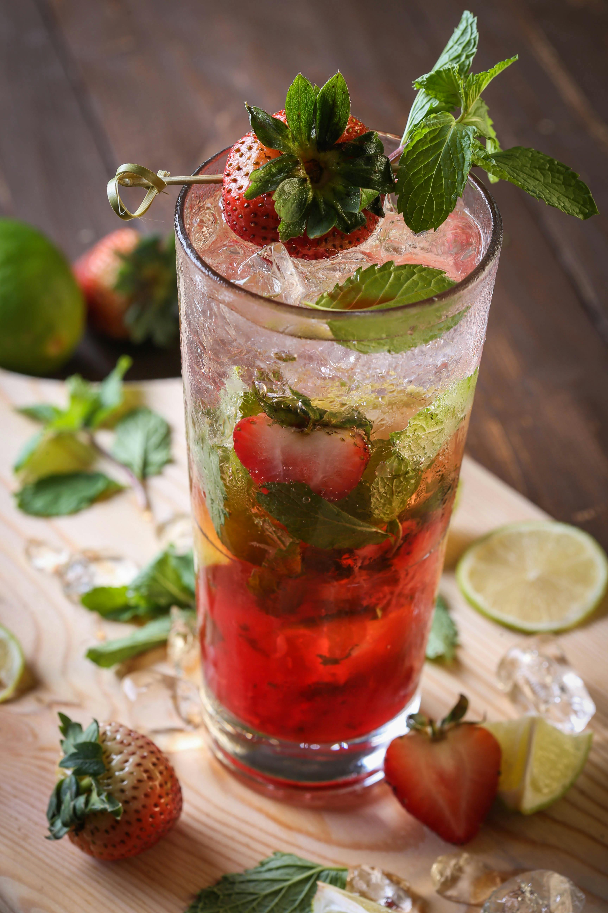

Mocktails Recipes

Crispy Strawberry Mocktail
Ingredients:
• Strawberries
• Fresh lime Sweetener
• Soda Water (sparkling water/club soda)
• Basil
How to prepare:
Step 1: Combine the strawberries, lime juice, basil, and sweetener into a bowl/jug and muddle well (or use a blender to puree).
Step 2: Optionally, strain the mixture through a fine-mesh strainer. Alternatively, simply add large ice cubes to the glass/es and top up with soda water. Stir Well
Optionally garnish with additional lemon/lime slices or even cucumber.
HOW TO STORE
Leftovers will store in the refrigerator for 2-3 days when covered (if un-strained or alternatively 4-5 days if strained). Just give it a quick stir before using and away you go.

PURPLE RAIN MOCKTAIL
Fruity, long and colourful, the purple rain gets its distinctive hue from mixing together blue curaçao and grenadine.
Ingredients:
• 300ml soda
• 1 tbsp blue curaçao
• 25ml lime juice
• 75ml grenadine coloring
• lemonade, to top up
• lime wedge, to garnish
How to prepare:
• STEP 1
Pour SODA, curacao lime juice and grenadine COLORING into a highball glass filled with ice and gently stir.
• STEP 2
Top up with lemonade and garnish with a lime wedge. (If it’s not purple enough, try halving the amount of curaçao, or increase the grenadine by another 25ml.)

GREEN APPLE AND BERRY MOJITO
Yearning for a refreshing drink? If yes, then here is a cocktail recipe that will leave your taste buds impressed.
Green Apple Mojito is prepared with white rum, green apple syrup, lemon juice, soda and mint leaves; and is an apt drink for a summer party. The addition of white rum in the recipe, elevates the flavours of the drink and makes it even more enticing in taste. So if you are bored with the regular mojito, then choose this drink that will for sure bring a wave of bracing flavours in your mouth.
INGRIDIENTS:
• 10 ml apple syrup
• 4 pieces lemon
• 1/2 teaspoon sugar
• 60 ml white rum
• 30 ml soda
• 8 cubes green apple
• 6 mint leaves
• 15 ml lemon juice
• 1/2 cup ice cubes
STEPS
• Step 1 Prepare the glass
To begin with, add ice cubes in a high ball glass followed by adding lemon pieces and mint leaves.
Then, muddle the ingredients a bit to combine them.
• Step 2 Add the ingredients
Once done, pour 60 milliliters of white rum in the glass followed by adding apple syrup (green apple syrup), sugar, lemon juice and soda. Mix well.
• Step 3 Serve
At last, add green apple cubes and lemon pieces to the drink. Stir and mix well. Serve chilled!
TIPS
Instead of sugar, you can add some honey or stevia for a healthier twist
Cocktails Recipes

Margarita
The Margarita is a classic cocktail that is typically made with tequila, triple sec (orange-flavored liqueur), and lime juice.
It is often served in a glass with a salted rim. The combination of sweet, sour, and salty flavors makes it a refreshing and popular choice.
Ingredients:
• 2 Oz tequila
• 1 Oz triple sec
• 1 Oz lime juice
• Salt (for rimming the glass)
Instructions:
1. Rim the glass with salt by moistening the rim with a lime wedge and dipping it in salt.
2. In a shaker with ice, combine tequila, triple sec, and lime juice.
3. Shake well and strain into the prepared glass over ice.
Martini
The Martini is a sophisticated cocktail known for its simplicity and elegance. It traditionally consists of gin or vodka and dry vermouth.
It is often served in a chilled martini glass and can be garnished with a lemon twist or an olive. The Martini is a symbol of classic cocktail culture.
Ingredients :
• 2 Oz gin or vodka
• 1/2 Oz dry vermouth
• Lemon twist or olive (for garnish)
How to prepare :
1. In a mixing glass with ice, combine gin or vodka and dry vermouth.
2. Stir well and strain into a chilled martini glass.
3. Garnish with a lemon twist or olive.
Mojito
The Mojito is a Cuban cocktail that features white rum, sugar (traditionally sugar cane juice), lime juice, soda water, and mint. It is known for its refreshing and minty flavor.
The cocktail is usually served over ice in a highball glass and garnished with a sprig of mint and a lime wedge.
Ingredients:
• 2 Oz white rum
• 1 Oz simple syrup
• 1 Oz lime juice
• 6-8 fresh mint leaves
• Club soda
• Lime wedge and mint sprig (for garnish)
Instructions:
1. Muddle the mint leaves and simple syrup in a glass.
2. Add rum and lime juice, then fill the glass with ice.
3. Top with club soda and stir gently.
4. Garnish with a lime wedge and a sprig of mint.